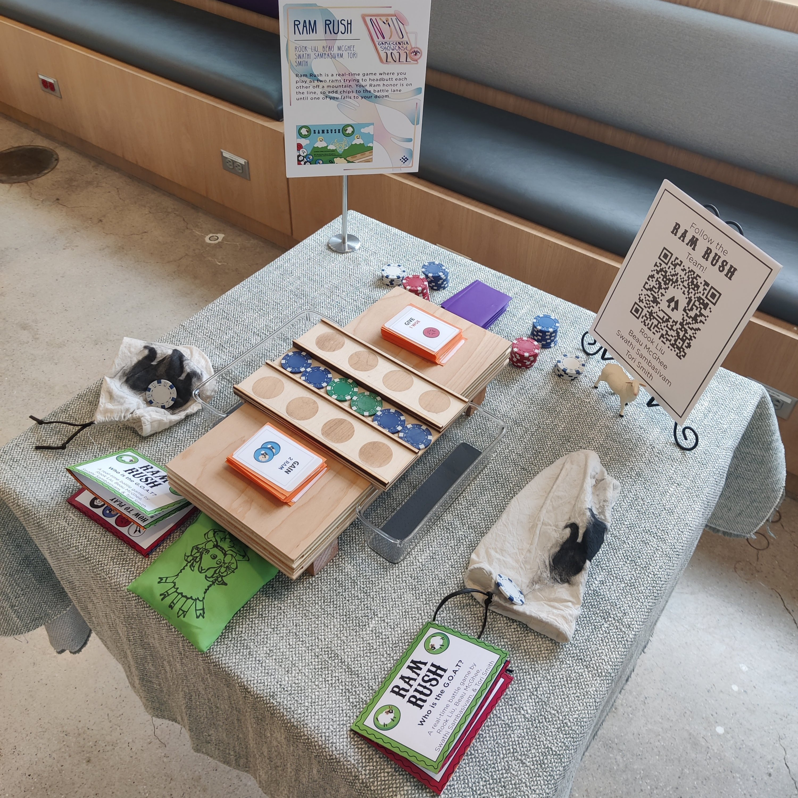
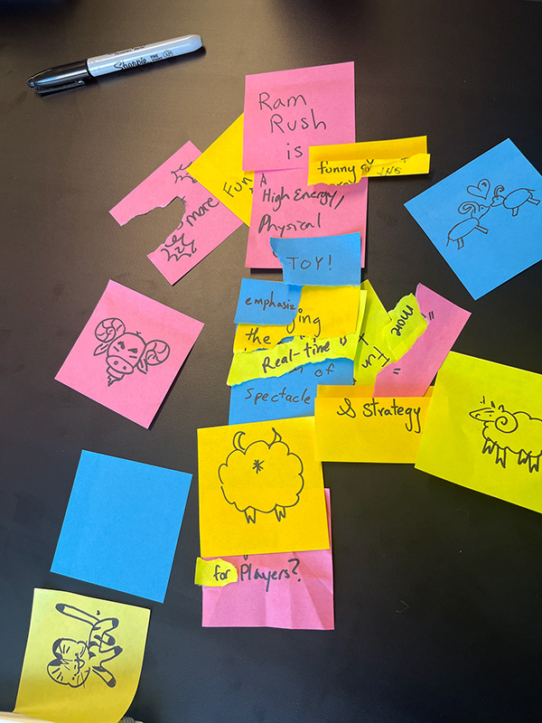
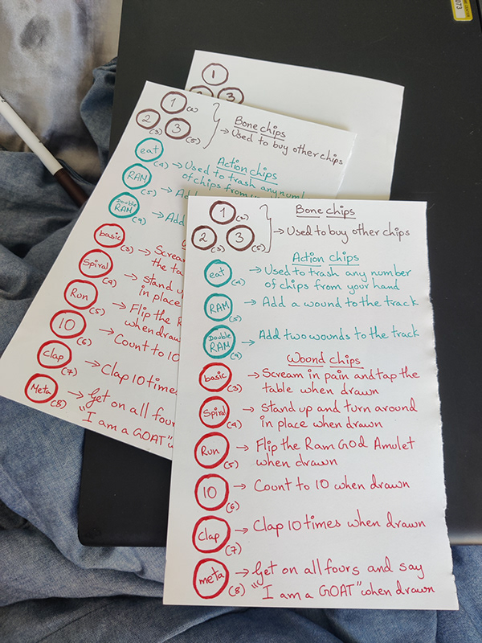
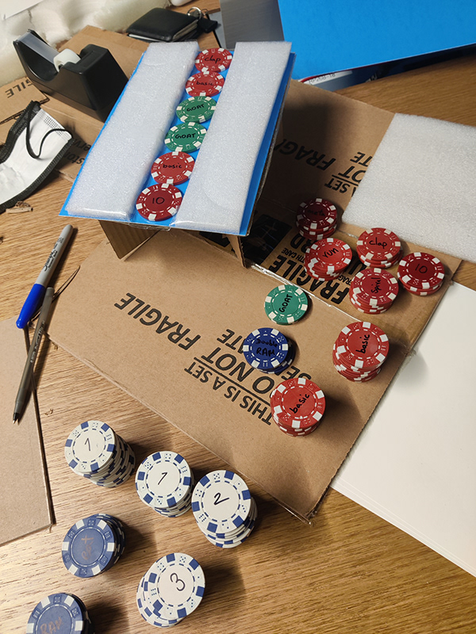
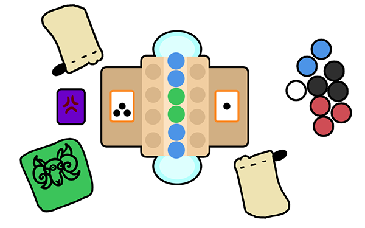
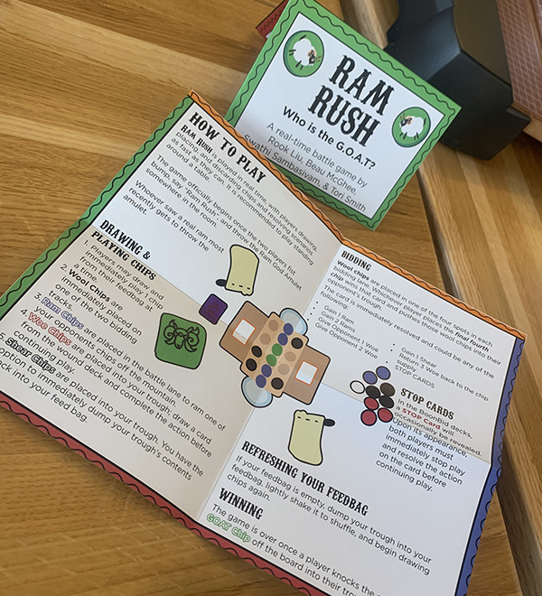
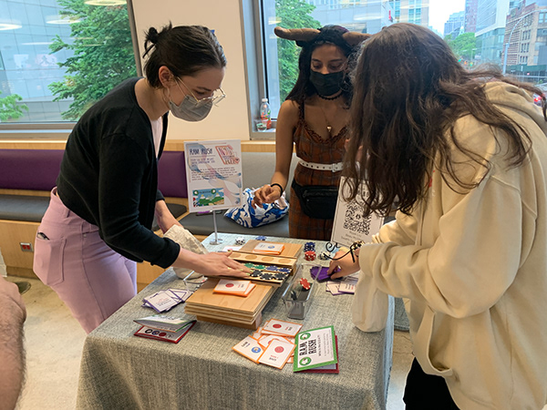
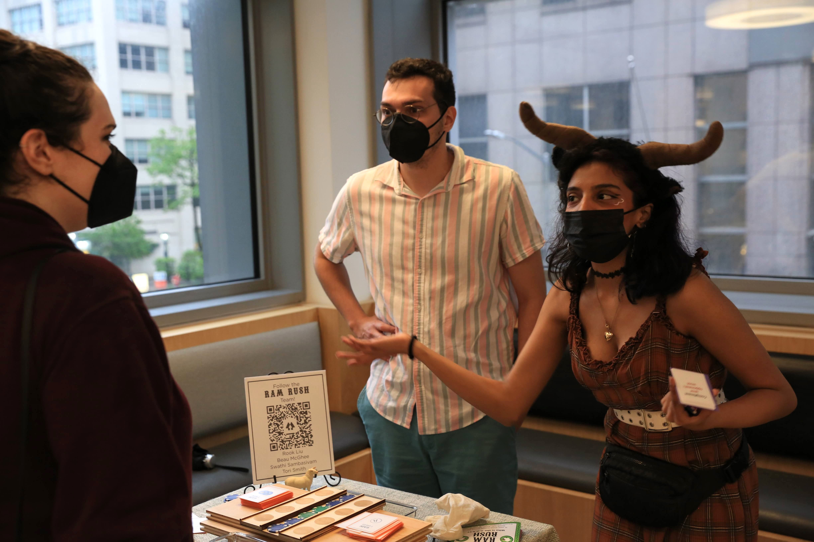
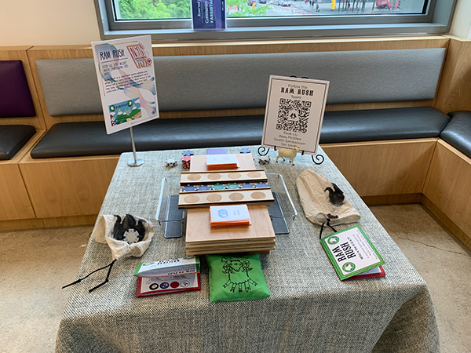
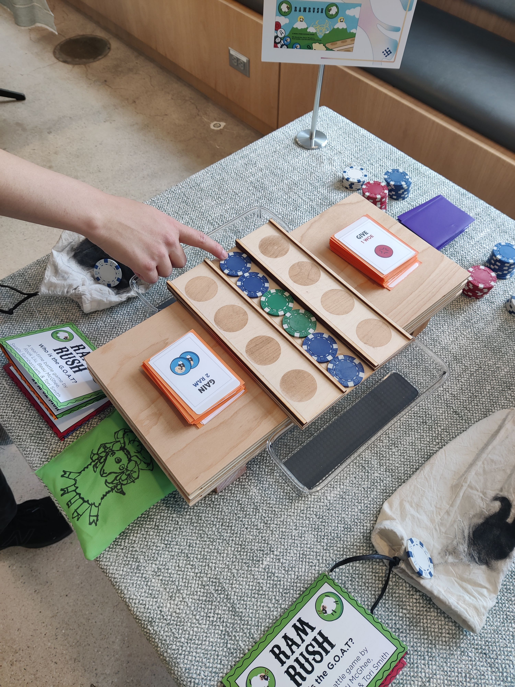

Ram Rush

The brief
Ram Rush is a two-player real-time tabletop game built for spectacle. You play one of two rams butting heads on a mountain ledge, adding chips to the battle lane in real time until one of you tumbles off the side. There are no turns. Both players move at once. It’s noisy and fast and meant to be watched as much as played.
It was built in Eric Zimmerman’s Game Design 2 class at NYU with Tori Smith, Beau McGhee, and Rook Liu.
The approach
We wanted to make a real time game with no turns. The thing that kept being interesting was watching two players panic in real time. So we shifted the design toward spectacle: short rounds, no turns, a stack of chips per player, and a single shared battle lane where everything was happening at once.
From there the design walked into punishments. Every chip you played did something to your opponent or to the lane. The punishments were what gave the game its character. They’re mostly a quick activity the opponent needs to perform.



The work
The chips were the whole game on paper. Each chip was one colour and one effect, easy to read at a glance, easy to slap down without thinking. We iterated on the icon set across multiple playtests until each chip’s intent was obvious from across the table. You lose when your main ram token is pushed off the board.


At the events where Ram Rush has been showcased it’s always been a hit, usually a large group of friends would arrive and elect two of their friends to play, the game working with an audience worked in our favor. We played it at Willoughby Walks later in the year and again at Wonderville’s Saturday Tabletop Series.




Credits
Team
Tori Smith
Beau McGhee
Rook Liu
Tools
Illustrator
Photoshop
Card stock & tabletop prototyping
Recognition
NYU Spring Showcase · 2022
NYU Parkade @ Willoughby Walks · 2022
Wonderville Saturday Tabletop Series